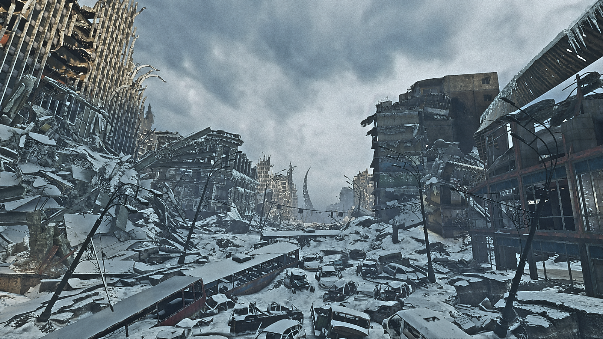
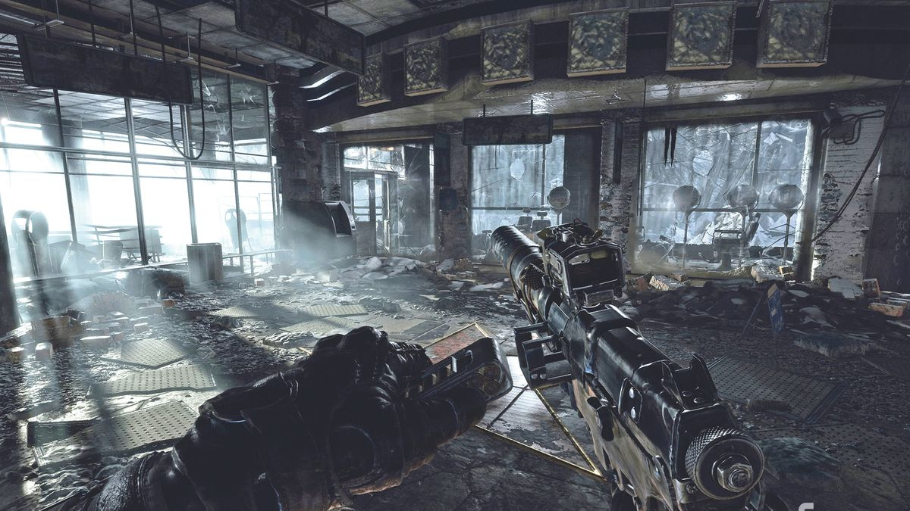
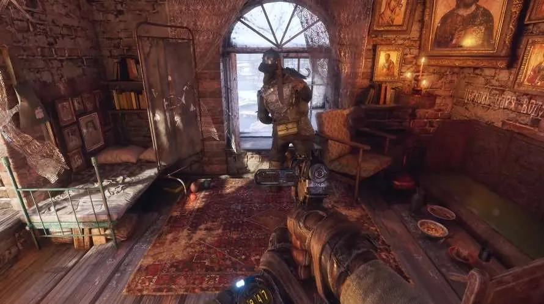

Aleksei camina para llegar al edificio abandonado, mientras tanto, observa lo destruida que se encuentra la ciudad. Incluso logra identificar una estructura que se habla en las leyendas. Se trata del hogar de unas criaturas llamadas los Oscuros se caracterizaban por volver locas a las personas. Pero una vez, un valiente heroe llamado Artyom acabó con ellos gracias a la ayuda de un misil. Dejando de un lado las historias, entre en el edificio en donde encuentra un arma de fuego en un estado deplorable. Aleksei decide tomarla, aunque no tiene idea si sigue siendo completamente funcional, por lo que no debería de tomarla en cuenta como un método de defensa confiable.
|  |  |
Subiendo hasta el punto más alto del edificio, se encuentra con un hombre que parece haber estar viviendo ahí por un largo tiempo, el hombre se presenta como Dimitri y le dice a Aleksei que sus compañeros lo abandonaron hace tiempo durante una expedición hacía la biblioteca. Este le cuenta que un monstruo llamado demonio acabó con varios de sus compañeros. Este le propone algo a Aleksei, si este lo ayuda a acabar con la bestia, él le dará información de como llegar de forma segura hasta la polis. No obstante, Aleksei se está quedando sin tiempo, pues su máscara de gas y sus filtros solo le darían 10 minutos más en la superficie. Por lo que tendría que acabar con el demonio lo más rápido posible y regresar a la estación de metro antes de que el gas tóxico acabe con él.
